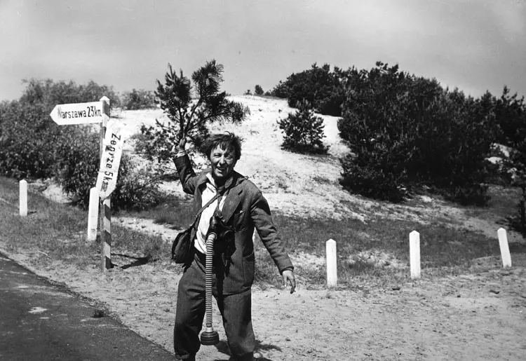
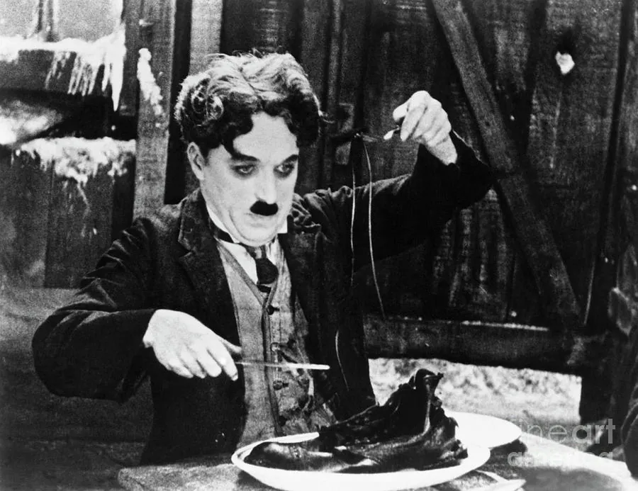
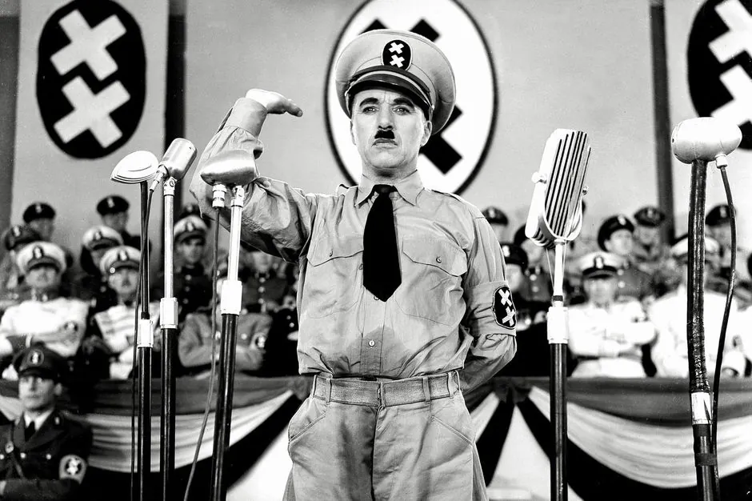
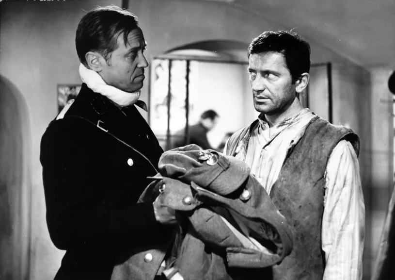
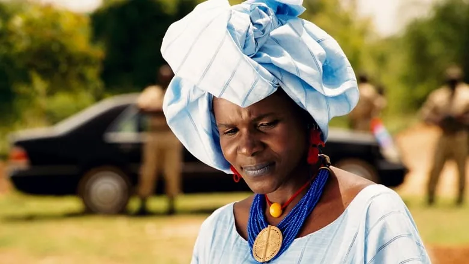
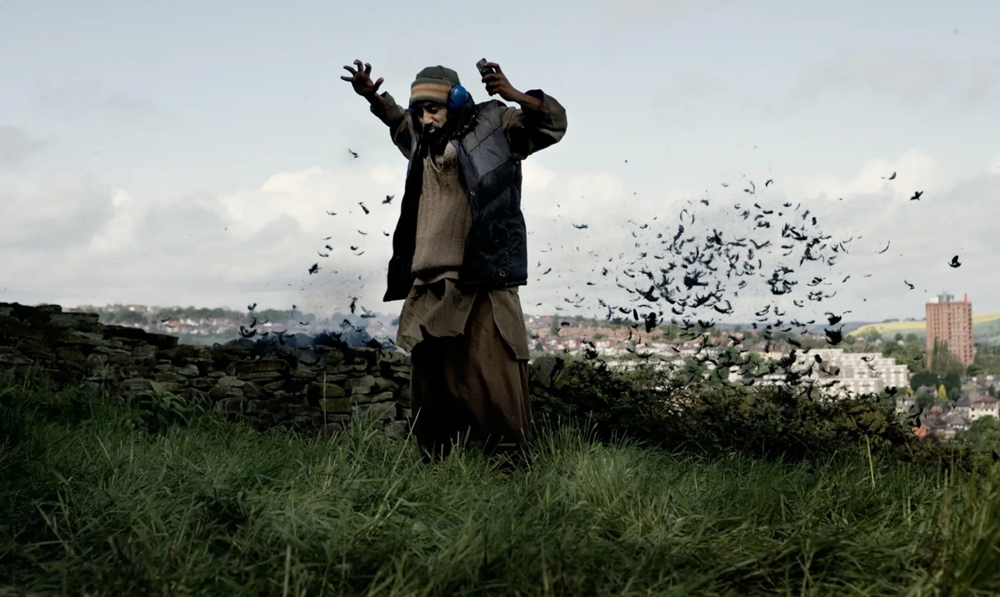

Collective Trauma - War and Humour
It was April 4th 1960. The realm of the Polish cinematic art scene became divided in how to represent the nation’s painful recent history. In the aftermath of unmeasurable destruction and hardship as Poland became Europe’s battlefield, the filmmakers faced challenges in preserving the memory of suffering and reflecting the moods of their society.

Just fifteen years after the end of World War II, and at the time of the current socialistic regime, Andrzej Munk and Jerzy Stefan Stawinski made a first film that comically presented the Polish martyred history. It was the main character who made this film so hilarious. Clumsy, unsuccessfully conformist, but most of all unlucky Jan Piszczek goes through different periods of his life, which spread through the 1930s, the war period and the post-war aftermath. Thrown into situations he did not ask for, he is a complete mess and failure, nothing goes as he would like to. Critics were polarised by either praising this new approach to writing history or found the production to be disrespectful. The film was criticised for presenting “a hero of our tragic history, but at the same time a villain ridiculing that same history”, while on the other hand it was praised for its realistic approach to every day people.
Dark humour and using a joke as a release of painful emotion has been explored in popular culture and academia for quite some time. Many well-known (American) comedians have been dealing with their traumatic past, like Pete Davidson, or struggled with exclusion and bullying in their childhood, like Sarah Silverman or Dave Chapelle. Their satirical approach often served as a coping mechanism to these experiences. Making jokes about trauma has always been a delicate issue, as there are many undefined boundaries when dealing with personal traumatic experiences. However, the definition and treatment of trauma changes in the context of collective memory, as it is shared and therefore less defined and personal. This shared experience gives nations, cities, ethnic minorities, genders or even families a new identity of which the sentiment is only fully understood within these groups. Humour in these situations provides a release, something that is shared collectively and gives this identity a new, lighter layer of understanding. It also opens up this hermetic sentiment to be understood by the “outsiders”.

Andrzej Munk’s film Bad Luck ("Zezowate Szczescie") was praised for its referential nature when it comes to the classics of Charlie Chaplin’s slapstick comedies. The grand-master’s influence on the cinematic field is undeniable. Chaplin often provided this humorous release much needed in the period of silent cinema ravaged by conflict, hunger and poverty. However, what made his approach to comedy special is that humour is often self-referential and he did not try to create a new reality, where the trauma ceases to exist. The 1925 silent movie The Gold Rush talked about a period that has seen many lives lost, and was very real to the people who watched it. The iconic sequence of Chaplin preparing and eating his own boot is funny and ridiculous, as it juxtaposes the absurdity of the character’s exaggerated table manners with the tragic desperation of hunger.
Arguably, the most quintessential film ever made by Chaplin is The Great Dictator released in 1940, right in the midst of the ongoing global war. This film’s satirical portrayal of Adolf Hitler aimed to ridicule the reasoning, sanity and real influence of this small man. Its seemingly light-hearted storyline culminated in the emotional and poignant speech of Adenoid Hynkel (Chaplin’s parody character of Adolf Hitler), where he realises his shortcomings and asserts he does not wish to rule or conquer anyone. Hynkel ultimately wants peace on Earth, as for him the unity of humans is the most important value. Chaplin’s film addressed the ongoing horror of the real war, as he ridiculed the figure that was most feared in the world at the time, and urged the people responsible for the conflicts to come to their senses.

The collective memory of trauma is not always catalysed directly by a human factor. Many nations and communities share their memories of destruction and loss in the events of natural disasters, unexplained events. However, the theme of war and conflict always involves a human error that can be ridiculed, a misunderstanding or just generally abstract ideals that people end up sacrificing everything for. This seems to be the reason why the only satirical art, films or writings about collective trauma revolve around war, political, social, ideological or economic conflict. Already in 1905, Freud talked about the cathartic function of a joke. Nonetheless, portraying traumatic historical events in a funny way has always been a delicate issue. The emotional confusion linked with war comedies can be understood as offensive (usually when executed badly), but also it allows the artists to be more realistic in commemorating the events. Following the controversial success of Bad Luck, the first part of How I Unleashed World War II (Polish: “Jak rozpętałem drugą wojnę światową”) was released in 1969. The comically unfolding events convince the main character Franciszek Dolas in believing that his thoughtless actions are the sole reason for the outbreak of the war. Dolas, being inherently a good person, tries to rehabilitate his mistakes and when escaping the Gestapo, he is thrown around by fate into different war situations in Yugoslavia, Mediterranean region, Africa and then back to Poland. This film was released long enough after the war and provided a witty Polish soldier character for it to become iconic. The film is renowned for one of the funniest scenes in Polish cinema, where asked for his name by Nazi soldiers, Dolas cleverly replies: “Grzegorz Brzęczyszczykiewicz, born in Chrząszczyżewoszyce”.
“Humour heightens our sense of survival, and preserves our sanity.”
Even though it seems that nowadays all “Western” nations live in relative peace, exporting their conflicts to distant regions and communities, there is still an ongoing idealogical war that occupies the territory of Europe and America. The issue of bombings and ISIS terrorist attacks, and the aftermath of 9/11 was addressed beautifully through humour in the 2010 British film titled Four Lions. The film protagonists are five British Muslim men, who are plotting a bombing, but cannot agree about what the target should be. Omar is deeply critical of Western society, but his cousin Waj is dim-witted, convert Barry is bad-tempered, and Faisal is naïve, while later recruited Hassan does not seem to understand the weight of the situation. We find all of them involved in terrorist activity, and it is irrelevant how they got into it and why. Their clumsy and uncalculated actions result in accidental assassination of Osama bin Laden, discussions about blowing up the pharmacy chain Boots and making compilations of silly “bloopers” of their threatening recordings. Here, the protagonists are villains, but they are also clueless and this makes the viewer root for them to survive. Riz Ahmed, the lead in the movie, said in the interview that at first when seeing the proposed the script he was reluctant to play another “brown terrorist”, but what convinced him about the importance of the project was the film’s objective to humanize the characters in post 2005 London bombings reality. The ridicule, the tragic story set in the British suburbs, the compassion for the characters and the institutional racism all create a story that is compelling, funny and most of all, incredibly relevant. It rewrites history and loosens up the rigid perspective of the suffering.

These films show that dark humour, even collective, is a very personal issue, it depends on the nation, the severity and reasons for the conflict. But in all cases, the humour providing playful accounts of the past and of identities, softens the blow of the horrendous events of which the portrayed group can be either a victim or a perpetrator. Eyal Zandberg wrote in his text, Ketchup is the Auschwitz of Tomatoes, that the Holocaust being satirically portrayed in history was an “evolutionary development: from the use of humour to criticise Holocaust remembrance to the use of Holocaust memory to create humorous effects”. This is exactly how Charlie Chaplin used humour to ridicule and criticise the politics of his time that were causing the conflict to spread around the globe and resulted in the deaths of countless people and cities. Then, these destroyed cities and communities affected by the aftermath, used the history of their tragedy to create humorous effects and commemorate their suffering.

This also makes the phenomenon of war and its satire universal and understandable by everybody. Fanta Régina Nacro, a director of the 2004 Burkina Faso film Night of Truth (French: "La Nuit de la Verité") took that concept of universal war as the starting point. Watching from afar the horrors of the Yugoslavian war, she created a story about the fragility of peace, set in a fictional West-African country. Even though the comedic element exists in the story through the character of the village idiot, the humour does not play a central role as in the other mentioned films. Nacro argues that the universality of war comes from the suffering of loss and uncertainty of tomorrow, and she proved that a person or a nation does not need to live through a war to understand it.
This article opens a discussion about collective trauma in different cultures and communities. Apart from the films that were made by generations still affected directly by the aftermath of their wars, there are also modern humorous portrayals of the Holocaust, such as widely acclaimed Jojo Rabbit. Its impulse to bring history as a modern cautionary tale, rather than commemorating the events of the past, gives yet another perspective. However, this English-language-centric distribution of media, and consequently film, creates an imbalance in understanding of the other perspectives in this matter. More or less satirical approaches to war in their regions such as the 1996 Croatian film How the War Started on My Island or the 2008 Afghan Opium War get lost in the dominated “Western” perspective. What are artistic expressions in your region that cope with trauma satirically and with the use of humour?
